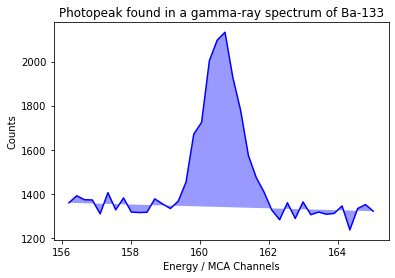
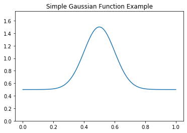
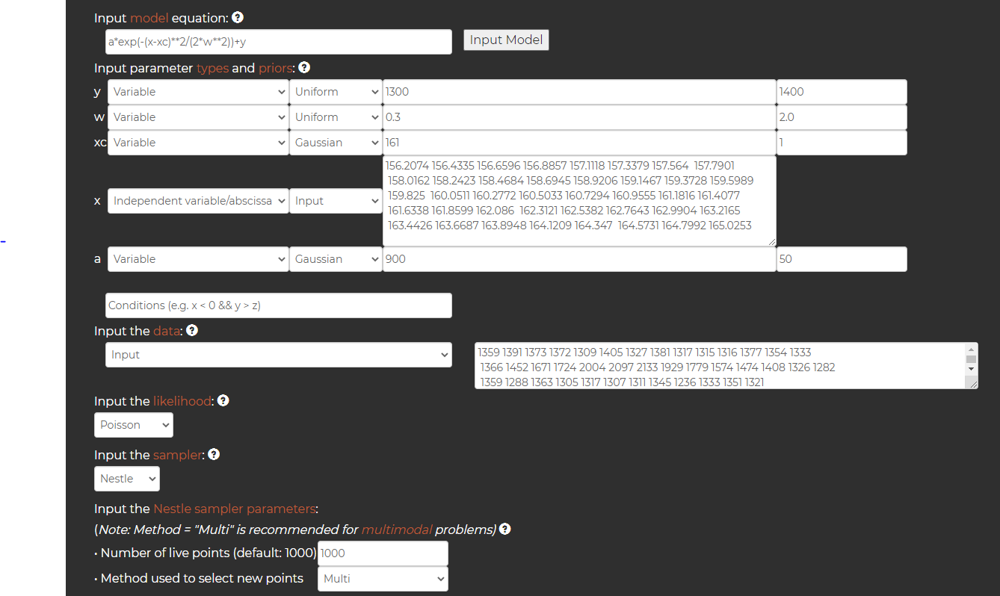
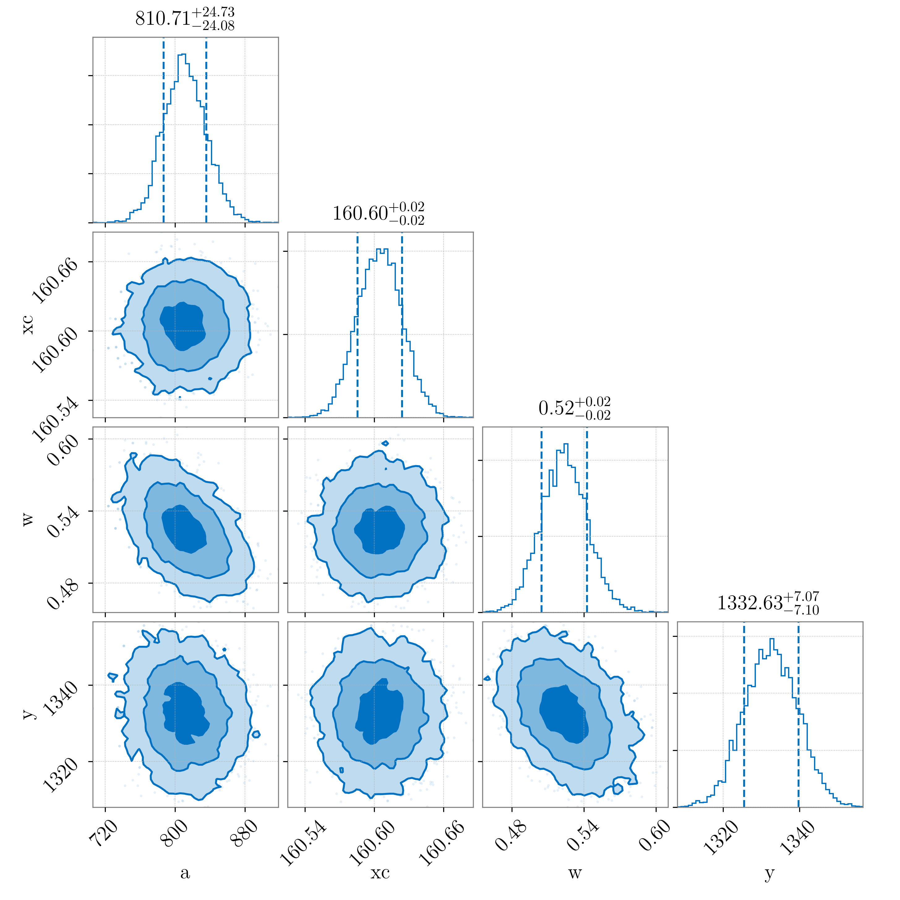

Using The Online MCMC to fit a model without any installations
Sometimes it's not easy to install packages in Python without knowing what you're doing. Even if you do, you might be limited by your operating system or hard-drive space. Instead of installing Python, or any of the samplers described on this website, you can use The Online MCMC. This is a free-to-use website which allows you to simply enter a model, define the parameter priors, input the data, and the website does the rest.
In this example, I'll use a photopeak from my gamma-ray spectroscopy example to demonstrate how to use The Online MCMC to fit a model to some data.
Useful imports
# no imports necessary for using The Online MCMC
# packages only used for plotting/dataframes etc.
# numpy
import numpy as np
# pandas
import pandas as pd
# plotting
import matplotlib.pyplot as plt
Viewing the data
Lets start by taking a look at the photopeak in question. I separated the photopeak from the rest of the gamma-ray spectrum, and uploaded it here if you wish to download it.
# load data using pandas
data = pd.read_csv('onlineMCMC_data.csv')
# the format of the data is shown using .head()
print(data.head())
Energy Counts
0 156.2074 1359
1 156.4335 1391
2 156.6596 1373
3 156.8857 1372
4 157.1118 1309
We can briefly plot the peak below, just to visualise the data:
counts = data['Counts'].values
energy = data['Energy'].values
plt.plot(energy, counts, 'b')
plt.fill(energy, counts, 'b', alpha=0.4)
plt.xlabel('Energy / MCA Channels')
plt.ylabel('Counts')
plt.title('Photopeak found in a gamma-ray spectrum of Ba-133')
plt.show()

The model
For more details on what a gamma-ray spectrum and a photopeak are, check out this section of my gamma-ray spectroscopy example. For now, I'll only state that we'll be using a Gaussian function to model the data seen above. The function takes the following form:
def gauss(x, a, xc, w, y0):
"""
Gaussian function
:param x: 1D array of input points
:param a: Amplitude of peak
:param xc: Mean peak energy
:param w: Standard deviation of peak
:param y0: Background counts under peak
:return: 1D array of Gaussian output points
"""
return a*np.exp(-(x-xc)**2/(2*w**2))+y0
# make a plot just to demonstrate shape of model
# array of points for x axis
test_x = np.linspace(0,1,100)
# easy-to-visualise parameters
a = 1
xc = 0.5
w = 0.1
y0 = 0.5
# pass to Gaussian functio
test_y = gauss(test_x,a,xc,w,y0)
#plot
plt.plot(test_x,test_y)
plt.title('Simple Gaussian Function Example')
plt.ylim(0,1.75)
plt.show()

Sampling the data
Now that we know what our data looks like, and what our model looks like, we can pass everything to The Online MCMC website. Below is a screenshot of what all my inputs looked like on The Online MCMC. I'll talk through everything I did afterwards:

First, I inputted the model. The Online MCMC allows for several basic functions to be used, such as trigonometric functions and exponential functions, so there is no need to approximate a model. The Online MCMC also allows for piecewise functions, which take different forms depending on the values of the x-axis.
Next, the website automatically detects and produces a list of variables in your model equation. I set "x" as an independant variable, and the other variables as parameters. For the independant variable "x", I inputted the list of x-values (in this example the list contained in the "energy" variable). For the parameters, the priors have to be defined. I did this simply by guessing at the values of the parameters using the photopeak plot above. I used a uniform prior for the background counts and standard deviation, and a normal prior for the other parameters.
I next inputted the data (the list contained in the "counts" variable), and chose a likelihood. The Online MCMC gives a choice of Normal, Poisson, and Student's t likelihoods, of which I chose a Poisson distribution. Again, for more details on why I chose a Poisson likelihood, check out this section.
Finally, I chose a sampler. I chose to use Nestle, although some other samplers I could have chosen are emcee, dynesty, and PyMC3. I set up the number of live points, and chose a sampling method 'multi'.
From there, all you have to do is enter an email address so the website can send the results once the sampling is complete, and click 'submit'.
Results
After a short while, The Online MCMC will email you with all the results from the sampling process. The first thing available to us is a corner plot produced by "corner.py":

This plot shows us the posteriors for each parameter, along with contour plots showing how a parameter may vary with any other.
The Online MCMC also provides a link to download the posterior samples, so you can go ahead with further analysis if needed. Comparing to this section, we can see that the mean values from both The Online MCMC and PyMC3 are very much in agreement, and the standard deviation errors are also simillar.
Since this is only an example to show how you can use The Online MCMC to sample data, I won't go into all the further analysis on the photopeaks (which can be found here).